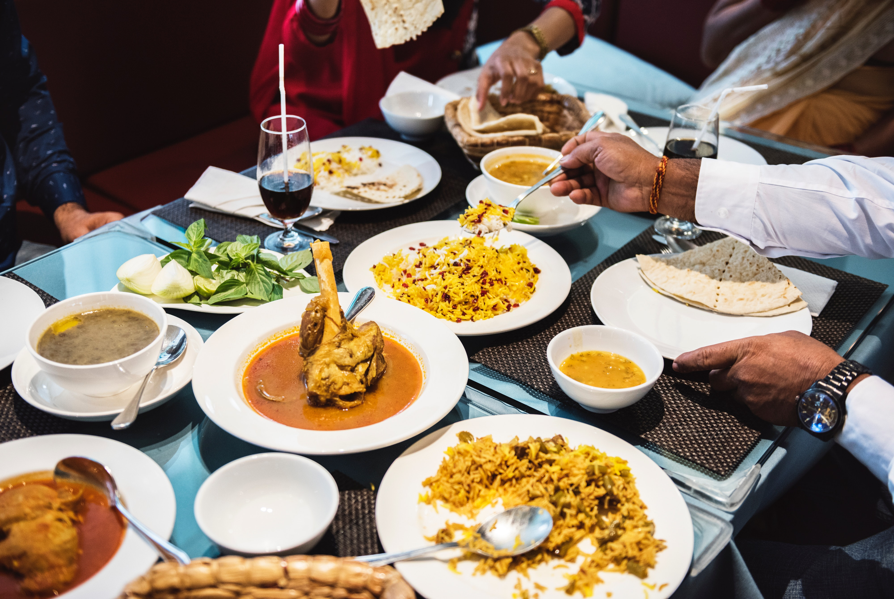
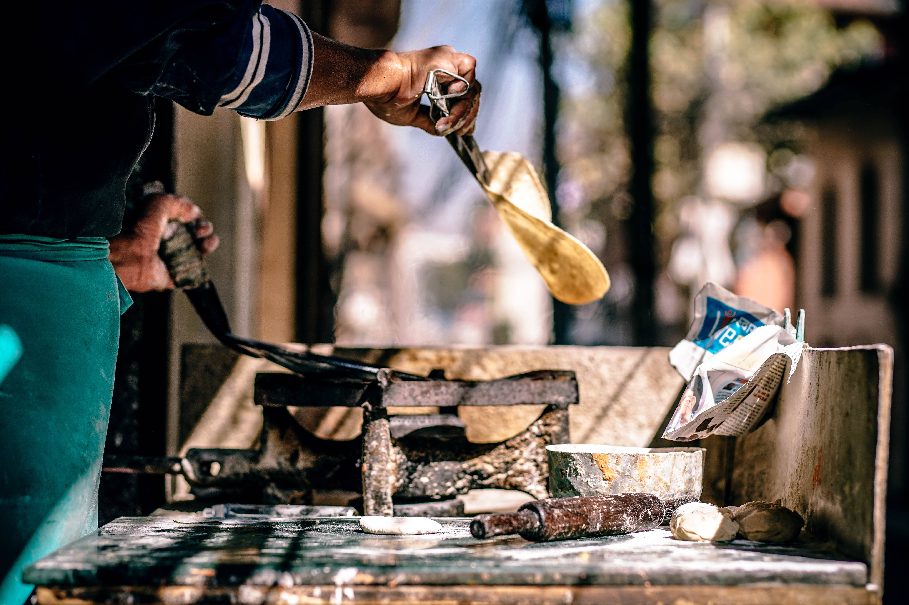

Explore with me
A kaleidoscope of traditions, culture and vibrant geographies, travelling India can be a soul-stirring journey. From its dusty snow trenches, frolic coasts, gripping natural green to the mystic ravines of spirituality and clusters of cultural shades defining the raw beauty, India captures the heart of every tourist. Whether its culture, spirituality, food, history, you'll find what you'll are seeking here. I have a dream of touring India to explore the spirituality, and of course the food. I would love to travel the country, eat the best food, and learn about its culture on the way. Join me as I map out my dream .
Cultural Landmrks

Pictured above are a few of the most reknown landmarks in India. The Taj Mahal was built between 1632 and 1653 by order of the Mughal emperor, Shah Jahan, in memory of his favorite wife Mumtaz Mahal. The red fort was built in the seventeenth century, and was the main residence of the emperors in the Mughal dynasty. Perhaps one of the most important religious sites for Sikhs is the Golden Temple, a beautiful structure located in the city of Amritsar.
Food
-

- 
- 
-

India has a variety of foods. Some of the most popular are tikka masala, butter chicken, samosas, and naan, of course. My personal favorites include biryani, palak paneer, and parantha. Although there is food everywhoere, there are some cities that are especially known for great food, sucha as Delhi, Mumbai, and Hyberdad!